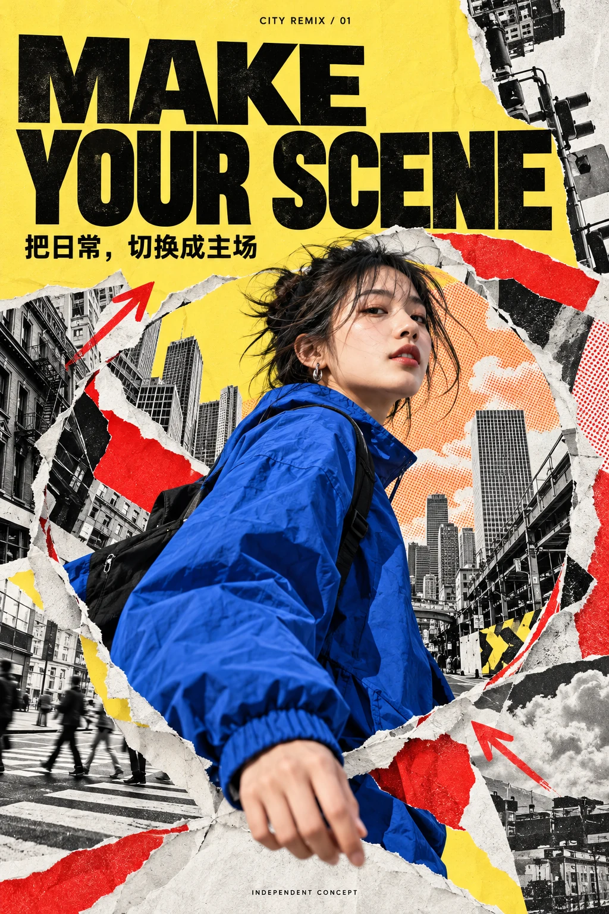
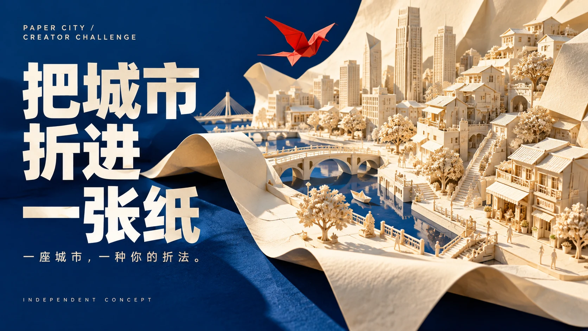
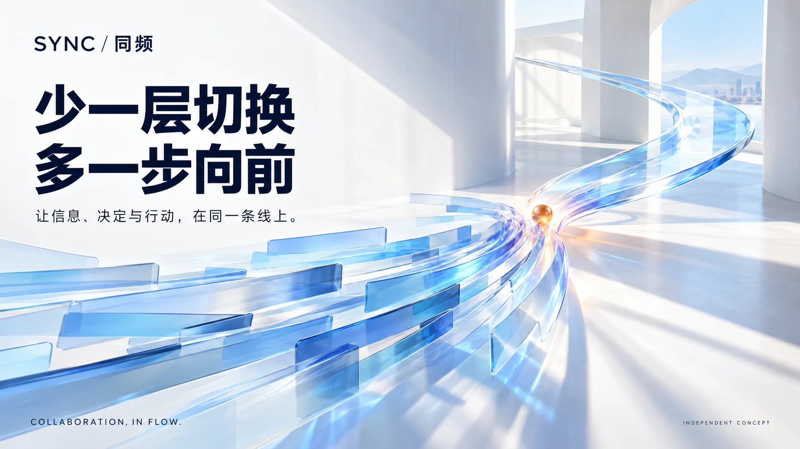
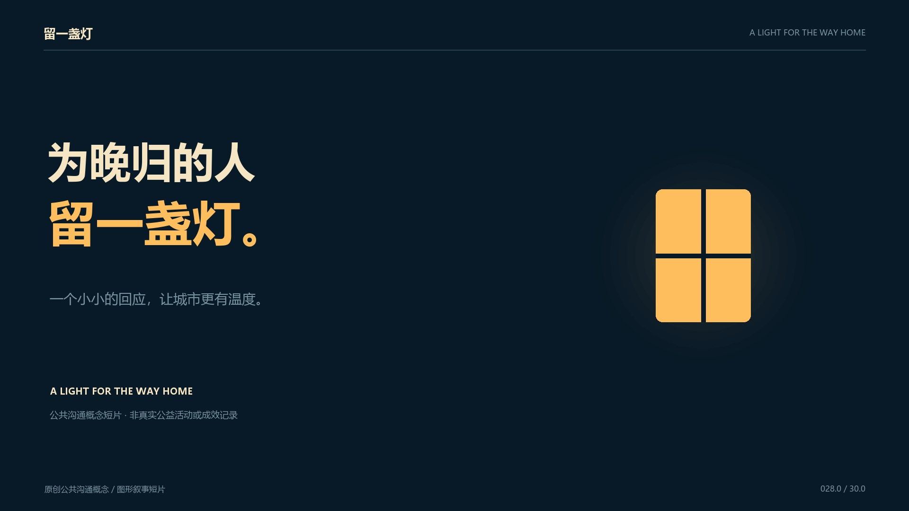

全部 8 个案例
把指标异常转成可追溯的诊断建议，演示预算约束、目标切换和实验判读。
广告策略助手从任务拆解到证据引用，完整呈现失败、重试、人工确认与结果归档。
Agent 任务工作台
03CREATIVE / INTERACTIVE EFFECT三套可编辑图文特效：替换图片与文案，预览动态，导出创意静帧。
把日常切换成主场
04OPERATIONS / CREATOR CAMPAIGN一套从参与 brief、质量自检到七天内容计划的创作者挑战运营方案。
把城市折进一张纸
05BRAND / PRODUCT MOTION用产品动作讲清协作价值：主视觉、24秒动效、分镜与传播提案。
少一层切换，多一步向前
06FILM / GRAPHIC STORYTELLING30秒公共沟通图形叙事，窗口、光线与城市关系在画面中逐步建立。
给晚归的人，一点温暖建立角色设定、场景关键帧和四种光照对照，并记录一致性观察。
灯火投递员比较摄影、水粉与手作微缩的风格变化，提供人工标注工具和迭代记录。
同一场景，三种媒介根据截图中可辨认的 13 个岗位名称组织阅读路径。案例是独立创作；岗位名称用于说明能力方向，不代表官方委托或已通过招聘要求审核。
| 岗位方向 | 推荐先看 |
|---|---|
| AI 产品实习生（广告策略） | 01 / GrowthPilot ↗ |
| 广告策略产品实习生 · 广告业务 | 01 / GrowthPilot ↗ |
| AI Agent 产品实习生 · 巨量 AI 工作台 | 02 / FlowDesk ↗ |
| 特效创意设计（图文方向）· TikTok | 03 / CITY REMIX ↗ |
| 创意设计实习生 · TikTok | 03 / CITY REMIX + 04 / PAPER CITY ↗ |
| 多媒体创意设计实习生 · TikTok | 05 / SYNC + 06 / 留一盏灯 ↗ |
| 创意视觉设计实习生 · 飞书设计 | 05 / SYNC 传播系统 ↗ |
| 视频创意设计实习生 · 飞书设计 | 05 / SYNC 功能动效 ↗ |
| 创意设计（视频方向）· 飞书设计 | 05 / SYNC + 06 / 留一盏灯 ↗ |
| AIGC 视频制作实习生 · 中国公共关系 | 06 / 图形叙事 + 07 / 镜头美术 ↗ |
| Seedance 2.5 资产美术实习生 · 火山方舟 | 07 / LANTERN COURIER ↗ |
| AIGC 美学设计实习生 · 抖音 | 08 / RAIN MARKET ↗ |
| 内容运营（即梦 AIGC 方向） | 04 / PAPER CITY ↗ |
视频案例呈现程序化动态图形与原创音轨；角色案例交付二维设定与概念关键帧。实际使用的视频模型、三维建模、Effect House 工程与 ComfyUI 执行结果不在本组交付中。
每个项目保留可操作成果、关键取舍和制作边界。产品演示使用合成数据与规则模型；视觉使用 AI 辅助生成，保留提示词和迭代；评测记录仅报告实际执行的检查。